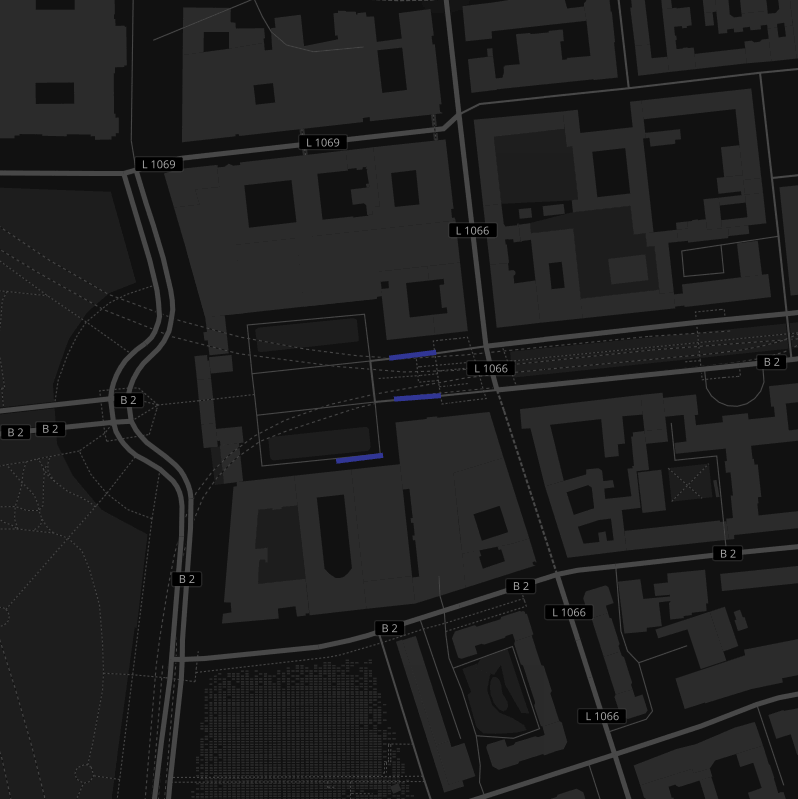
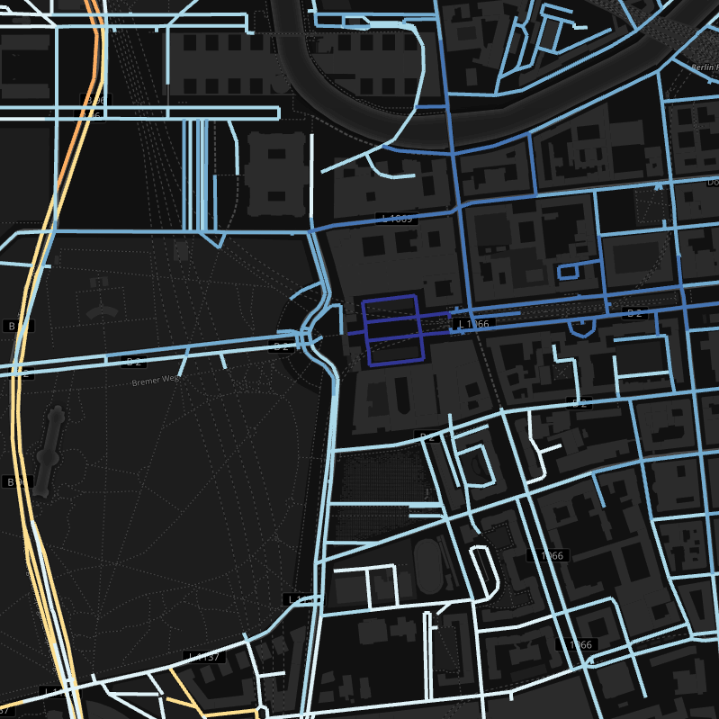

Title: glTF Tiling Subject: Backend Specification Authors: Alexander Schoedon (schoedon@uni-potsdam.de) Tags: webgl, gltf, json, buffer, leaflet, tiling, webmapping Status: Draft Version: 0.2 Created: 2015-12-09 Updated: 2016-04-19
Table of Contents |
Different approaches for styling and rendering maps in web applications exist. Widely used architectures are raster or vector services that provide web mapping apps with geodata in client/server models. Raster data is efficiently prerendered server-side using a static, predefined appearance. Vector data can be rendered client-side using dynamic stylization with CPU-consuming JavaScript postprocessing algorithms.
In the light of powerful, dedicated graphics hardware being even available on mobile devices nowadays, this specification suggests new techniques for client-side rendering of web maps with complex geometries on GPUs. This technique allows to display complex geodata and maintain a dynamic, interactive styling while preserving real-time rendering performance and low response times.
This part of the specification describes the server sided preprocessing of the geodata, tiling logic and array buffer creation for vertices, indices and colours.
Rendering huge geodata sets in web-based applications remains a performance critical task due to the complexity of the underlying data. Using classic approaches to render geodata in a web browser either leaves users with a predefined, static style (raster data) or a notable computation-intense rendering process (vector data).
The two aforementioned solutions of styling and rendering web maps are widely established and have proven effective. But both approaches have certain drawbacks.
Data transmitted in prerendered raster data formats (e.g., png, jpg) does not require any client-side processing and can be compressed and cached easily. This is used by major web mapping services like Google or Bing maps. The disadvantage for interactive mapping solutions is the lack of possibilities for users to dynamically interact with the map and retrieve custom styles at runtime without requesting a full map tile reload. Web services using this technology solve this with tiny vector overlays displaying additional user-styled information. But it is not possible to interact with the map data itself.
Geodata transmitted in vector formats (e.g., json, gml) opposes the raster tile approach and allows client-side stylization and rendering as the geographic raw data suddenly becomes available for the browser. But this advantage of options utilizing the geodata in the client comes with a major drawback in performance. Both the processing of the data and the rendering for the user are solved with CPU-consuming JavaScript algorithms. Some more recent solutions offer GPU-based rendering but fail with supplying convenient solutions of pre- or postprocessing of the vector data. Performance bottlenecks are avoided by filtering the data on the backend side.
The challenge now is twofold interesting. On the one hand it is important to enable rendering using GPU-based techniques like WebGL. This allows dynamic, interactive and user-defined styles to be rendered directly on the client's device. But on the other hand it is a must to completely eliminate the client-side postprocessing of the geodata as this becomes a major performance bottleneck with increasing data complexity.
The solution presented in this work is a hardware-geometry-based approach rather than known vector- or raster-based solutions. It maintains the goal to allow real-time rendering with outstanding performance and very low response times for the client.
The term 'geometry' may also refer to the missing geometry shader stage in WebGL as of version 1.0 which is bypassed with this technology. Future releases of WebGL might render this solution obsolete.
This is the technical specification for glTF tiling, especially the backend server sided preprocessing of the data and the API design.
glTF tiles are subdivided using common quadtree logic, similar to known
raster or vector tiling services. The tiles get {z, x, y}
coordinates similar to the
Google Maps
style, where z is the zoom and x, y the position
on the flat, quadratic web-mercator worldmap.
There are 22 zoom levels by default. Level 0
contains only one quadratic tile containing the whole world map on
{0, 0, 0}. Level 21 contains 4,398,046,511,104
(4^21) tiles where the world's boundaries are
{21, 0, 0}, {21, 2097151, 0},
{21, 0, 2097151} and {21, 2097151, 2097151}.
Additional zoom levels are not considered to be practicable but can easily
added to the tiling logic following the 4^n quadtree. The
defined number of zoom levels is not considired a binding boundary but
rather a recommended minimum to align with existing solutions.
The point of origin of the tile coordinates is the northwest corner of
the map {z, 0, 0}. All x and y
coordinates are positive integers. x increases along the
equatorial axis from west to east. y increases along the
meridianal axis from north to south.
z is not considered to be a third dimension but rather the
current zoom level. Three dimensional data is not covered by this
specification and sould be flattened.
Generalization or general simplificatoin of complex geodata sets is not part of this specificatoin. In opposite: this technology should be agnostic to the complexity of the underlying data.
To minimize the processing of data and allow easy OpenGL-transformations, it’s important to reduce reprojections and avoid spherical units (e.g., degree, latitude/longitude).
Most webmapping applications use the EPSG:4326 standard projection
which is the world geodetic system 1984 (WGS84) and uses a latitude/longitude
coordinate format. This means, most programming interfaces return values in
degree.
Internally, many apps use EPSG:3857, the web mercator projection,
a metric system going back to Gerard Mercator’s
flat world map
in 1569. It uses northing and easting as a measure of distance in meters from
the equator and the prime meridian. This is already an advantage over WGS84 as
it does not require computing-intense spheric transformations in calculations.
To simplify the geographic coordinates, all geographic references will be normalized on a single scale between [0,] with it’s origin in the northwest corner.
This pixel projection origin initializes with x=0.0 and
y=0.0 in the northwest corner of the map. The maximum boundary
is x=1.0 and y=1.0 in the southeast corner.
In this reference system, for instance the Brandenburg Gate in Berlin would
be at normalized mercator coordinate {0.5371583, 0.3279734}.
Due to the data-intense applications in webmapping services, most implementations follow a client/server model. It’s important to research and evaluate options on exchange formats for the underlying geodata.
The following formats are considered worth for comparison.
.dae) is used for modelling purposes and exchange of editable 3D models..gltf) was recently released by the Khronos Group and promises to be a file format more close to the hardware requirements..json) which is extended by geographic features with geometries and properties..gml) is an XML grammar for expressing geographical features.The table below compares the stated formats and evaluates both, their space-complexity and postprocessing requirements. The space-complexity is important to evaluate the required bandwidth for the application. The postprocessing is the aforementioned bottleneck in performance of transforming geographic data into close-to-hardware array buffers for the GPUs.
| Format | Space-Complexity | Client-Postprocessing |
|---|---|---|
| .dae.gz |
+ +
|
required, decompress |
| .glb |
+ o
|
not required |
| .gltf.gz |
+ o
|
decompress only |
| .dae |
o o
|
required |
| .gltf |
o -
|
not required |
| .json |
o -
|
required |
| .gml |
- -
|
required |
Concerning the space requirements, both glTF and COLLADA perform above average.
Base of the comparison are the Cesium Milk Truck and Cesium Man by
Analytical Graphics Inc.
The binary version of glTF (.glb) is even smaller than a gzipped
version (.gltf.gz). Classic geodata formats fail in terms of
space-complexity since both, JSON and XML formats are quite bloated.
Concerning the client-side postprocessing requirements, only the OpenGL transfer format allows to store array buffers which eleminates any javascript processing other than requesting and reading the data. This is an obvious knockout criteria for the other candidates and therefore glTF will be considered the best choice for this application.
For more details about the gltf format, please consult the full glTF Specification.
| Index | Vertex (X) | Vertex (Y) |
|---|---|---|
| 0 | 0.537167191505432 | 0.327970743179321 |
| 1 | 0.537165760993958 | 0.327970921993256 |
| 2 | 0.537165939807892 | 0.327972143888473 |
| 3 | 0.537167310714722 | 0.327972024679184 |
| 4 | 0.537164211273193 | 0.327973991632462 |
| 5 | 0.537165582180023 | 0.327973812818527 |


- Vertex Buffer Size: 2 (x, y)
"vertices": [ 0.537167191505432, 0.327970743179321, 0.537165760993958, 0.327970921993256, 0.537165939807892, 0.327972143888473, 0.537167310714722, 0.327972024679184, 0.537164211273193, 0.327973991632462, 0.537165582180023, 0.327973812818527 ]
"indices": [ 0, 1, 2, 3, 4, 5 ]
@TODO
@TODO https://gist.github.com/5chdn/e9967987b3fe81822d0dc3eb77670ebe
This document is placed in the public domain under CC0 conditions.